図解：初期ルネサンス
初期ルネサンスの展開
- 1300年代

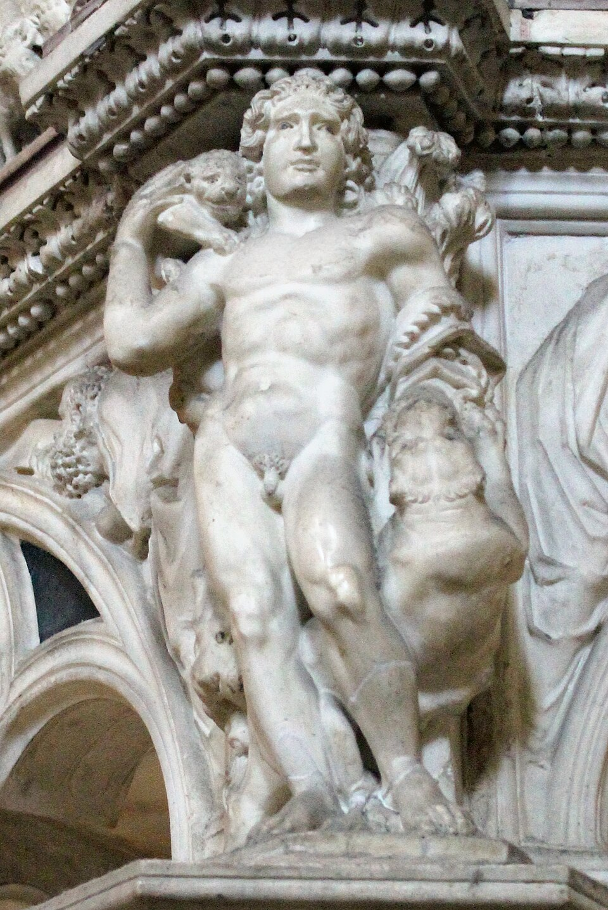
文学から人文主義ダンテ・ペトラルカ
ジョットらが先駆 - 15世紀前半
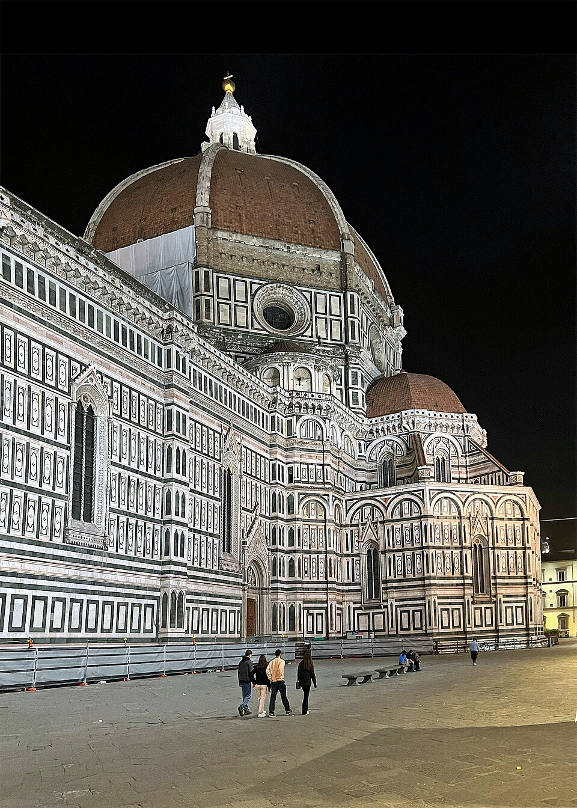
建築と線遠近法ブルネレスキ
数学で空間を設計 - 15世紀前半
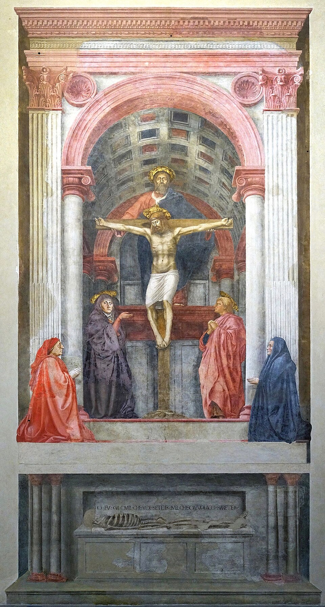
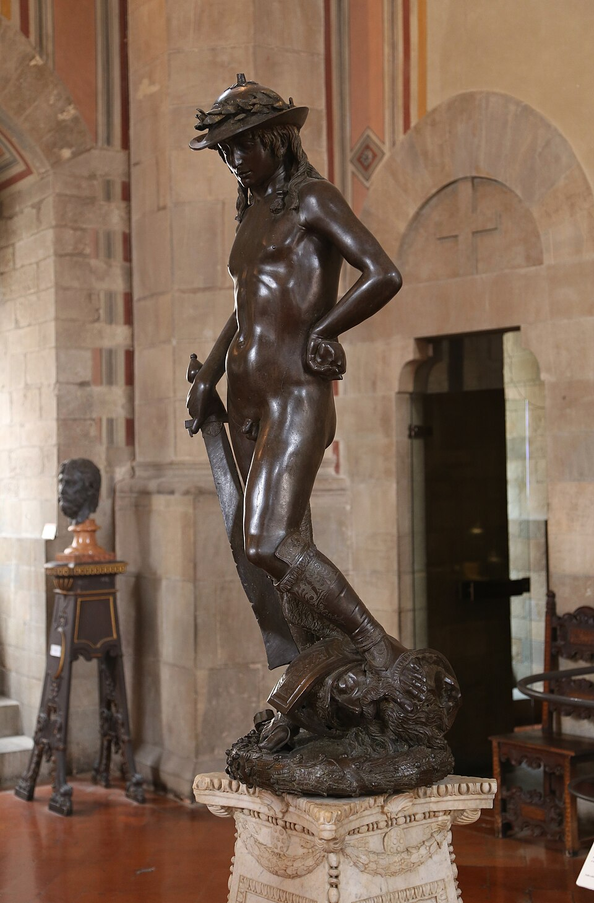
絵画・彫刻の革新マザッチョの空間
ドナテッロの人体 - 15世紀後半
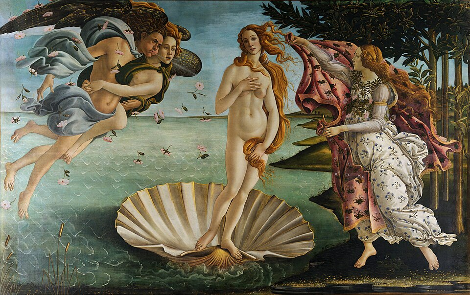
古代神話を描くボッティチェリ
ロレンツォが支援 - 1495〜

 盛期ルネサンスへ工房で技術を継承
盛期ルネサンスへ工房で技術を継承
三大巨匠の傑作
中世の美術と何が違うか
共和政の成功例を参考に空間奥の大きさが不正確消失点で正確に描く
線遠近法建築の基準神のいる天空へ人間の大きさ
自然との調和聖母の描き方金の装飾と華やかな衣服人間らしいマリア
フラ・アンジェリコの変化主題キリスト教が中心古代神話も描く
図版の出典
- バルジェッロ礼拝堂のフレスコに描かれたダンテ（14世紀、ジョット派とされる）の写真複製、1870～1880年頃、アムステルダム国立美術館：出典（CC0）
- 《剛毅（ピサ洗礼堂説教壇の支持彫像）》ニコラ・ピサーノ：出典（CC BY-SA 4.0）
- 《サンタ・マリア・デル・フィオーレ大聖堂のドーム》フィリッポ・ブルネレスキ：出典（CC BY-SA 4.0）
- 《聖三位一体》マザッチョ：出典（Public domain（PD-Art））
- 《ダヴィデ（青銅像）》ドナテッロ：出典（CC BY-SA 3.0）
- 《ヴィーナスの誕生》サンドロ・ボッティチェリ：出典（Public domain（PD-Art））
- 《キリストの洗礼》アンドレア・デル・ヴェロッキオ、レオナルド・ダ・ヴィンチ：出典（Public domain（PD-Art））
- 《最後の晩餐》レオナルド・ダ・ヴィンチ：出典（Public domain（PD-Art））
重要人物
文学と美術の先駆け
- ダンテ詩人『神曲』でウェルギリウスを案内役に。ジョットを称賛
- ペトラルカ詩人古代文献を翻訳し、人文主義を生み出す
- ジョット画家感情表現や空間表現を用いたプロト・ルネサンスの画家
- ニコラ・ピサーノ彫刻家ゴシックの写実性と古代の裸身表現を融合
芸術を支えたパトロン
- コジモ・デ・メディチパトロンメディチ家。私財を公共事業や芸術に投じる
 ロレンツォ・デ・メディチパトロンコジモの孫で「豪華王」。多くの芸術家を支援
ロレンツォ・デ・メディチパトロンコジモの孫で「豪華王」。多くの芸術家を支援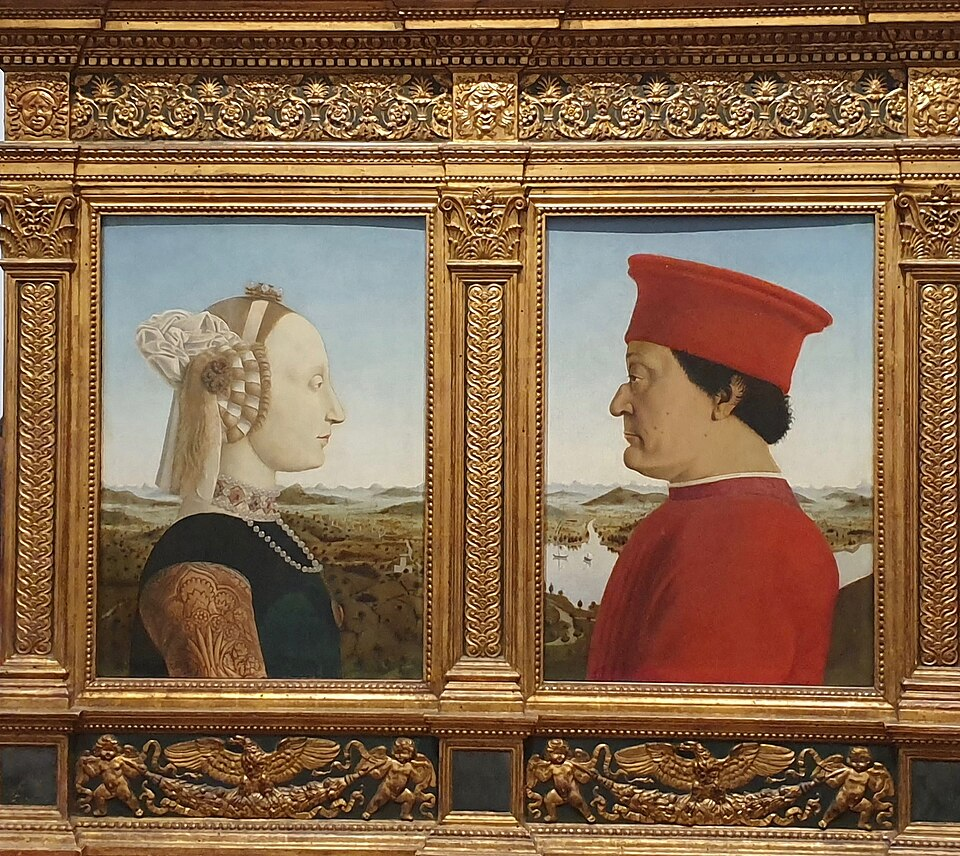
フェデリーコ・ダ・モンテフェルトロウルビーノ君主ウルビーノで芸術家を支援
初期ルネサンスの出発点
後継者と各地の画家
- レオン・バッティスタ・アルベルティ建築家・理論家『絵画論』『建築論』などで理論を著作に残す
- フラ・アンジェリコ修道士画家《受胎告知》がゴシックからルネサンスへ変化
- ピエロ・デッラ・フランチェスカ画家数学や科学を生かした絵画。ウルビーノで活動
- アンドレア・マンテーニャ宮廷画家短縮法とイリュージョニズム。マントヴァで活躍
 サンドロ・ボッティチェリ画家初期ルネサンスを代表し、古代神話を描く
サンドロ・ボッティチェリ画家初期ルネサンスを代表し、古代神話を描く- アンドレア・デル・ヴェロッキオ彫刻家大きな工房を経営し、レオナルドの師となる
肖像・図版の出典
- バルジェッロ礼拝堂のフレスコに描かれたダンテ（14世紀、ジョット派とされる）の写真複製、1870～1880年頃、アムステルダム国立美術館：出典（CC0）
- 《ロレンツォ・デ・メディチ》テラコッタ胸像（ヴェロッキオらの原型によるとされる）、1478～1521年、ワシントン・ナショナル・ギャラリー：出典（CC0）
- 《ウルビーノ公夫妻の肖像（フェデリーコ・ダ・モンテフェルトロとバッティスタ・スフォルツァ）》ピエロ・デッラ・フランチェスカ：出典（CC BY-SA 4.0）
- 《東方三博士の礼拝》に描き込まれた自画像とされる人物（部分）、ボッティチェリ、1475年頃、ウフィツィ美術館：出典（Public domain）
ルネサンスとは
古代文化を再生する意味
動画 1:20～ルネサンスとは、フランス語で「再生」「復興」を意味する言葉です。16世紀の美術史家ジョルジョ・ヴァザーリが用いた「リナシタ」が、その語源になったといわれます。古代文化を復興する動きは、それ以前にもありました。フランク王国のカール大帝時代に行われたカロリング・ルネサンスや、ビザンツ帝国のマケドニア朝ルネサンスも、古代ローマ文化の復興を目指した運動です。これらの呼び名は、イタリアのルネサンスを基準として、後から付けられたものです。
ただし、同じ古代文化の復興でも、その目的は異なります。以前の復興運動には、かつてのローマ帝国の栄光を取り戻すという意図がありました。一方、イタリアでは、人々が生きていくために古代を学ぶ必要があり、その結果として美術も発展しました。その背景には、商業都市の成長と、都市が直面した危機がありました。
イタリアの都市とフィレンツェの危機
商業都市と教皇・皇帝
動画 2:21～14世紀のイタリアでは、商人たちが力をつけていました。十字軍そのものは失敗を重ねましたが、その中継地となったイタリアでは交易が活発になり、商人は利益を得ました。イタリア半島の領土を考えるうえでは、ローマ教皇と神聖ローマ皇帝の関係も重要です。
ローマ周辺には教皇領があり、教皇は宗教上の指導者であると同時に、その領土の支配者でもありました。その成立は、756年にフランク王ピピン3世が領土を譲った「ピピンの寄進」にさかのぼります。一方、北イタリアは、現在のドイツを中心とする神聖ローマ帝国の領域に含まれました。962年は、オットー朝を開いたオットー1世が戴冠した年です。このように、北部は神聖ローマ帝国、中部は教皇領に属していましたが、内部では皇帝と教皇の対立が続いていました。
皇帝と教皇は、聖職者を任命する権利、すなわち叙任権を巡って、11世紀から争いました。1077年のカノッサの屈辱は、皇帝が教皇に屈した事件として知られますが、これによって両者の争いが最終的に決着したわけではありません。その後も対立は続いていました。
コムーネと古代の自治
動画 3:55～商人が力をつけた都市では、自治都市であるコムーネが成立しました。代表例はフィレンツェ、シエナ、ヴェネツィアなどです。都市ごとに教皇派と皇帝派に分かれ、フィレンツェは教皇側、シエナは皇帝側に付きました。必ずしも信念だけで所属が決まったのではなく、隣の都市への反発から、反対側を選ぶこともありました。
都市同士が対立しながら、市民が自分たちの都市を治めるあり方は、状況の違いはあるものの、アテネやスパルタなど、古代ギリシアのポリスを思わせます。そのなかで、ルネサンスが最初に起こったのがフィレンツェでした。都市全体を支配する一人の君主がおらず、合議によって政治を進めました。その際、人々は、同じように市民が政治を行った古代ギリシアや共和政ローマの成功例を参考にしたのです。
この古代への関心は、帝国の再建を目指すものとは性格が異なります。自分たちの社会を運営するために、過去の知恵を学ぼうとしたのでした。もし別の時代に、より参考になる社会の例があれば、必ずしもギリシアやローマである必要はなかったでしょう。
金融の繁栄から危機へ
動画 5:13～一方、フィレンツェには厳しい時代も訪れました。12世紀の南イタリアとシチリア島には、ノルマン人のシチリア王国がありました。1194年、神聖ローマ皇帝ハインリヒ6世がその王位を獲得します。その後、教皇とフランスが王位を奪い返そうとし、フランス国王ルイ9世の弟シャルルが王位を継ぐことになりました。この遠征を資金面で支えたのが、フィレンツェの商人たちです。
1260年代後半、シチリア遠征でシャルルの勝利が確定すると、商人たちはシチリア、教皇庁、フランス、イングランドへの融資を通じて金融業を発展させました。しかし、その繁栄は長く安定して続いたわけではありません。1337年に始まった、フランス王位の継承や領土を巡る英仏の百年戦争が、その大きな転機となりました。ジャンヌ・ダルクの活躍でも知られる戦争です。
年代の補足：百年戦争の開始
字幕では1339年と認識されていますが、百年戦争の開始は通常1337年とされます。本文の開始年を補正し、戦争と金融危機の関係についての説明は保持しています。
確認資料：英国王立武具博物館
戦争によって、商人はフランスやイングランドで経済活動を行えなくなりました。軍事費がかさんだ両国は商人への債務を踏み倒し、フィレンツェでは商人の倒産や失業が相次ぎます。さらに14世紀半ば、ヨーロッパにペストが広がりました。フィレンツェでは人口の約4割が死亡したといわれます。こうした絶望的な状況のなかで、人間性を回復しようとする動きが強まったのです。
文学とプロト・ルネサンス
文学に始まる人文主義
動画 6:50～ルネサンスの最初の一歩は、絵画や彫刻ではなく、文学の分野で踏み出されました。フィレンツェ出身のダンテは、『神曲』に古代ローマの詩人ウェルギリウスを案内役として登場させています。その後を継いだペトラルカは、古代の思想が人間性を回復させると考え、古代文献の翻訳に努めました。
ペトラルカの活動は、従来の価値観とは異なる世界に触れるきっかけとなり、人間としてどう生きるべきかを考える人文主義、ヒューマニズムを生み出しました。また、ボッカッチョの『デカメロン』は、当時としては大胆で卑猥な表現も交えながら、人間の生き生きとした姿を描き、近代文学の先駆けとなりました。文学におけるルネサンスは、1300年代にすでに始まっていたのです。
プロト・ルネサンスの美術
動画 7:29～美術でも、ジョットやニコラ・ピサーノが先駆的な表現を行っていました。ジョットは、それまでの絵画には見られなかった感情表現や空間表現を用い、ダンテの『神曲』でも称賛されました。
南イタリア出身のニコラ・ピサーノは、神聖ローマ皇帝フリードリヒ2世による古代ローマ文化の再生という構想を背景に、ゴシックの写実性と、古代に見られる裸身の表現を融合させました。しかし、金融業の破綻やペスト流行によって、このような発展はいったん途切れます。文学と異なり、絵画や彫刻には大きな資金が必要でした。こうした美術は、ルネサンスの原型をなすプロト・ルネサンスと呼ばれます。

《剛毅（ピサ洗礼堂説教壇の支持彫像）》
- 作者
- ニコラ・ピサーノ
- 制作時期
- 1260年
- 所在地・所蔵
- ピサ洗礼堂、ピサ
- 素材・形式
- 大理石
出典・画像について
初期ルネサンスの出発点
メディチ家の芸術支援
動画 8:12～15世紀に入ると、メディチ家が台頭しました。13世紀には薬種商を営み、14世紀には金融業で財を築いた一族です。主な融資先が教皇庁だったため、フランスやイングランドによる債務不履行の影響を比較的受けずに済みました。ほかの金融業者が倒れたことで、かえって影響力を強めたのです。
権力を安定させたメディチ家は、公職に就くことを避けながら、私財を公共事業や芸術に投じました。コジモ・デ・メディチと、その孫ロレンツォ・デ・メディチは、芸術家を支えるパトロンとして重要です。彼らの支援のもと、芸術家は比較的自由に制作できるようになりました。
ブルネレスキと建築の設計
動画 9:05～ルネサンスの芸術活動では、まず建築の分野で新しい動きが現れました。その中心となったのが、フィリッポ・ブルネレスキです。彼は古代ローマの遺跡を研究し、フィレンツェのサンタ・マリア・デル・フィオーレ大聖堂のドーム建設を任されました。大聖堂はすでに建てられていたものの、巨大な開口部に屋根を架ける技術がなく、屋根のない状態で礼拝が行われていたのです。
ブルネレスキは、直径約42メートルという大きなドームを完成させました。また、円や正方形の組み合わせ、整数の比率などを用いて、空間の調和を数学的に設計しました。職人の経験だけに依存せず、計算と設計を重視する建築家の役割を確立した人物として位置づけられます。

《サンタ・マリア・デル・フィオーレ大聖堂のドーム》
- 作者
- フィリッポ・ブルネレスキ
- 制作時期
- 1420～1436年（ドーム本体）
- 所在地・所蔵
- フィレンツェ
- 素材・形式
- 建築
出典・画像について
用語の補足：建築家の役割
「最初の建築家」という説明は、古代以前には建築家が存在しなかったという意味では採用していません。本文では、職人の経験だけでなく数学的な計算と設計を重視した役割を確立した、という説明にしています。
作品情報の留保：ドームの直径
本文の約42メートルは映像の説明値です。大聖堂管理機関の解説は内径45.5メートル、外径55メートルとします。測定位置や基準の違いを今回確定していないため、数値の相違をここに残します。
確認資料：大聖堂管理機関のドーム解説
遠近法を体系化する
動画 10:01～ブルネレスキのもう一つの重要な功績が、遠近法です。近くにあるものが大きく、遠くにあるものが小さく見えること自体は、以前から分かっていました。しかし、国際ゴシックの名作である、ジェンティーレ・ダ・ファブリアーノの《東方三博士の礼拝》のように、奥にあるものの大きさや空間のつながりが、必ずしも正確ではない絵画もありました。ジョットは遠近法が体系化される以前から空間を表現していましたが、それは誰もが同じように実行できる方法ではありませんでした。

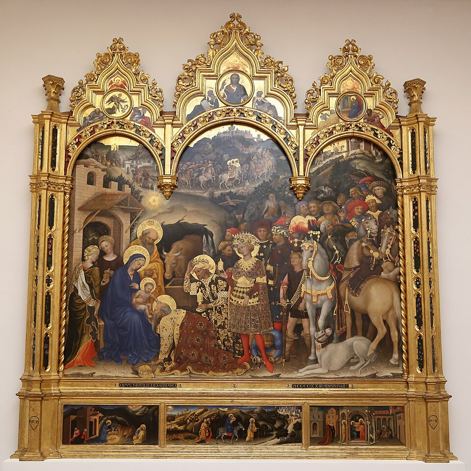
画像を拡大 ＋《東方三博士の礼拝》
- 作者
- ジェンティーレ・ダ・ファブリアーノ
- 制作時期
- 1423年
- 所在地・所蔵
- ウフィツィ美術館、フィレンツェ
- 素材・形式
- 板絵
出典・画像について
ブルネレスキは、誰でも正確に空間を描ける方法を考えました。それが透視図法、すなわち線遠近法です。たとえば、同じ大きさの柱が並んでいても、遠くの柱ほど小さく見えます。この縮小には一定の割合があり、見る人によって自由に変わるわけではありません。その見え方を科学的に整理したのです。
奥へ向かう線を延ばすと、一つの消失点へ集まります。消失点から延びる線に合わせて柱を配置すれば、奥行きを描けます。消失点が一つなら一点透視図法です。建物を斜めから見る場合などには二つの消失点を用い、それぞれから延びる線に合わせる二点透視図法になります。ブルネレスキは、建築図面を作る過程でこの方法を考案したらしいとされています。
マザッチョが描く空間
動画 12:02～この方法を絵画に生かしたのが、マザッチョです。当時、古代絵画を直接の手本にすることは難しい状況でした。火山の噴火で埋もれたポンペイの壁画などは、まだ発掘されていなかったためです。画家は古代彫刻を参考にし、遠近法を用い、自然を観察することで、平面の上に現実の世界を表そうとしました。
代表作《聖三位一体》では、遠近法と陰影を用い、奥行きのある空間が表現されています。《貢の銭》では、キリストの額に消失点を置くことで、見る人の視線をキリストへ導いています。マザッチョは27歳で亡くなりましたが、後の画家に大きな影響を与えました。

《聖三位一体》
- 作者
- マザッチョ
- 制作時期
- 1426～1428年頃
- 所在地・所蔵
- サンタ・マリア・ノヴェッラ教会、フィレンツェ
- 素材・形式
- フレスコ画
出典・画像について
 画像を拡大 ＋
画像を拡大 ＋
《貢の銭》
- 作者
- マザッチョ
- 制作時期
- 1424～1428年
- 所在地・所蔵
- サンタ・マリア・デル・カルミネ教会ブランカッチ礼拝堂、フィレンツェ
- 素材・形式
- フレスコ画
出典・画像について
画像出典：Masaccio
Public domain（PD-Art）
作品情報：作品・画像・利用条件
ギベルティとドナテッロ
動画 13:05～彫刻では、ロレンツォ・ギベルティが重要です。1401年、フィレンツェのサン・ジョヴァンニ洗礼堂の青銅扉を制作するための競技で勝利しました。彼の扉制作の仕事は、のちにミケランジェロが「天国の門」と呼んだ扉へとつながります。

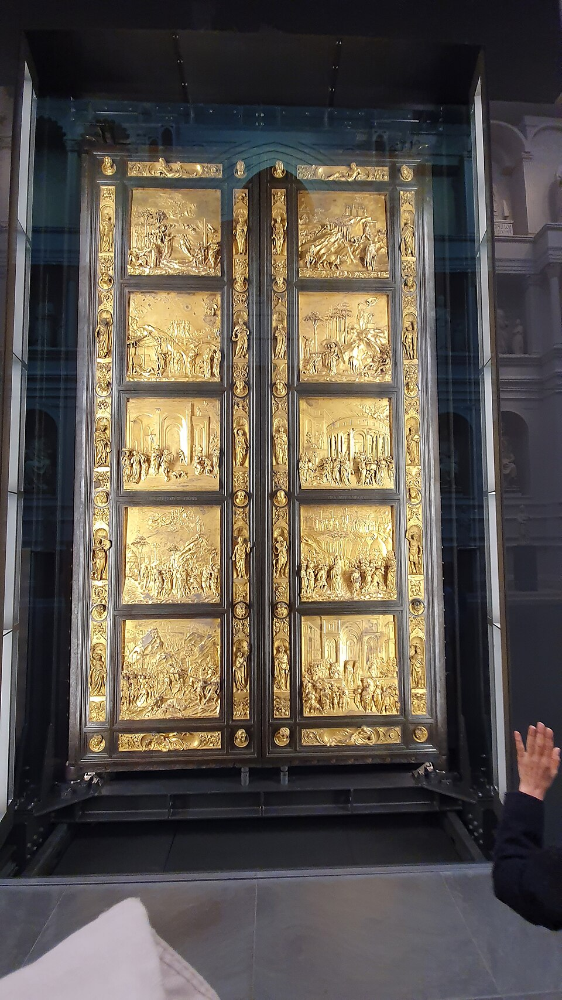
画像を拡大 ＋《天国の門》
- 作者
- ロレンツォ・ギベルティ
- 制作時期
- 1425～1452年
- 所在地・所蔵
- 大聖堂付属美術館、フィレンツェ（旧設置先：洗礼堂東扉）
- 素材・形式
- 青銅
出典・画像について
15世紀初めに活躍したドナテッロは、コントラポストを用いた写実的な人物表現を行いました。彫刻は柱などの建築的な枠から解放され、独立した像となっていきます。彼は青銅、大理石、木、テラコッタなど、さまざまな素材を使い、ミケランジェロ以前の最も優れた彫刻家と位置づけられます。初期ルネサンスの出発点を押さえるうえでは、建築のブルネレスキ、彫刻のドナテッロ、絵画のマザッチョという三人が特に重要です。

《ダヴィデ（青銅像）》
- 作者
- ドナテッロ
- 制作時期
- 1440年頃
- 所在地・所蔵
- バルジェッロ国立美術館、フィレンツェ
- 素材・形式
- 青銅
出典・画像について
画像出典：Rufus46
CC BY-SA 3.0
作品情報：作品・画像・利用条件
後継者たちと各地への広がり
アルベルティの理論とウッチェロの遠近法
動画 14:22～その後継者たちも、新しい表現を発展させました。建築のレオン・バッティスタ・アルベルティは、神のいる天空へ向かうゴシック建築とは異なり、人間の大きさを基準として、自然との調和を目指しました。半円形のヴォールトも用いますが、正確な計算によって設計され、ロマネスク建築のような不安定さは見られません。

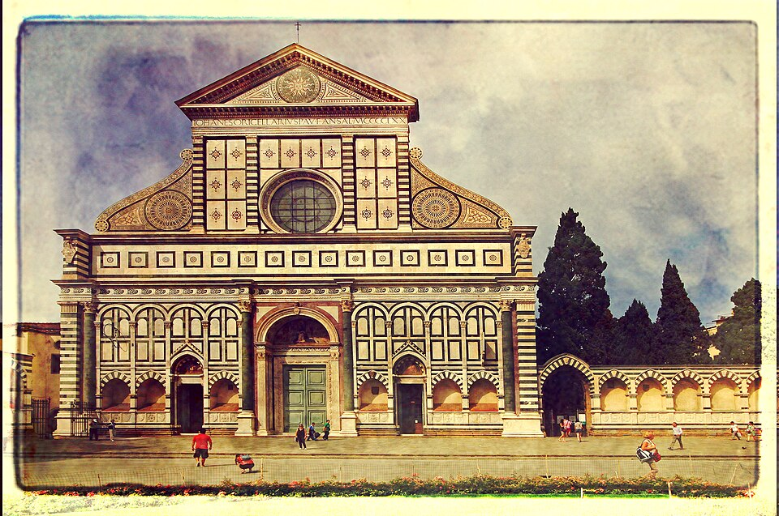
画像を拡大 ＋《サンタ・マリア・ノヴェッラ教会ファサード》
- 作者
- レオン・バッティスタ・アルベルティ
- 制作時期
- 1458～1470年
- 所在地・所蔵
- フィレンツェ
- 素材・形式
- 建築
出典・画像について
アルベルティの功績には、理論を文章として残したことも挙げられます。『絵画論』『彫刻論』『建築論』は、後の芸術家に大きな影響を与えました。ブルネレスキは透視図法を考案しましたが、その理論を体系的な書物としては残していません。方法を整理して著作として伝えることも、重要な仕事でした。
ウッチェロの透視図法
動画 15:07～パオロ・ウッチェロは、透視図法の研究に非常に熱心だった画家です。数百にも及ぶ点を計測し、遠近法による表現を追求しました。一方で、人物表現にはゴシックの特徴が残り、そのため、後世には必ずしも高く評価されませんでした。

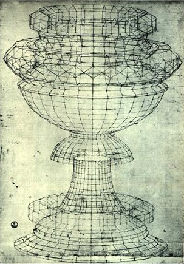
画像を拡大 ＋《聖杯の遠近法習作》
- 作者
- パオロ・ウッチェロ
- 制作時期
- 15世紀
- 所在地・所蔵
- ウフィツィ美術館・素描版画室、フィレンツェ
- 素材・形式
- 素描・紙
出典・画像について
動画は1430年頃、画像資料は15世紀としています。
画像出典：Paolo Uccello
Public domain（PD-Art）
作品情報：作品・画像・利用条件
制作メモ
303px幅の低解像度画像です。
フラ・アンジェリコの変化
動画 15:34～フラ・アンジェリコの本名はグイード・ディ・ピエトロです。フラ・アンジェリコとは「天使のような人」を意味する呼び名で、その名にふさわしく、熱心なキリスト教徒としてサン・マルコ修道院で敬虔な生活を送りました。天使がマリアに神の子の懐妊を告げる《受胎告知》を数多く残し、この主題の画家としても知られます。
彼の絵画の変化には、ゴシックからルネサンスへの移行が現れています。中世には保守的だった修道士画家の表現にも、変化が生じたのです。初期の《受胎告知》では、金による装飾や細部の描き込み、華やかな衣服のマリアなど、ゴシック的な要素が目立ちます。後の作品では、物語を伝えるために不要なものを省き、遠近法を用いた空間と、人間らしいマリアを描くようになりました。

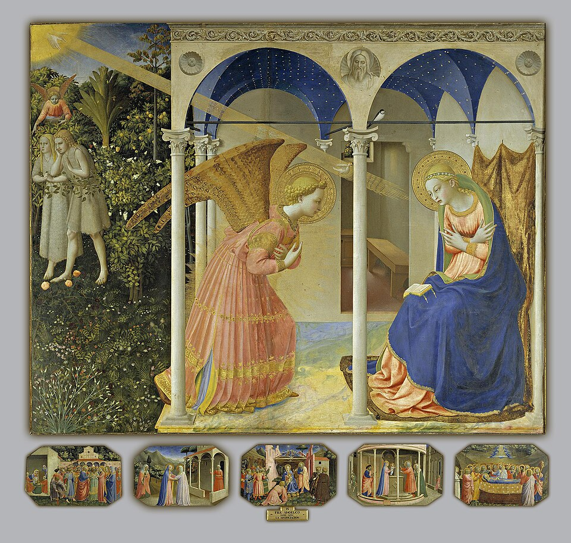
画像を拡大 ＋《受胎告知（プラド美術館）》
- 作者
- フラ・アンジェリコ
- 制作時期
- 1425～1426年
- 所在地・所蔵
- プラド美術館、マドリード
- 素材・形式
- テンペラ・板
出典・画像について
外を暗く、室内を明るくすることで、視線を聖母へ導いています。装飾的な衣服をまとわなくても、自然な姿に聖母の美しさが表れています。人物の大きさや華やかさに頼らず、当時のルネサンス絵画の技法を聖書の場面の表現に生かしたのです。フラ・アンジェリコは、後の修道士画家たちにも大きな影響を与えたといわれます。

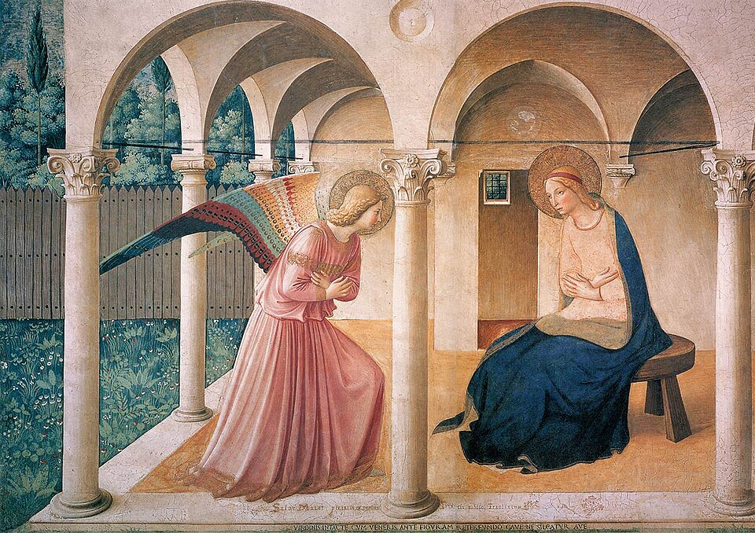
画像を拡大 ＋《受胎告知（サン・マルコ修道院北回廊）》
- 作者
- フラ・アンジェリコ
- 制作時期
- 1438～1450年頃
- 所在地・所蔵
- サン・マルコ美術館（旧修道院）北廊下、フィレンツェ
- 素材・形式
- フレスコ画
出典・画像について
修道士画家と数学的な絵画
動画 17:07～修道士画家には、フィリッポ・リッピもいました。ボッティチェリの師として知られますが、修道女との駆け落ちで知られる人物でもあり、敬虔な生活を送ったフラ・アンジェリコとは対照的です。
アンドレア・デル・カスターニョの《最後の晩餐》には、遠近法による空間と、人物を均衡よく配置した構図が見られます。ピエロ・デッラ・フランチェスカは、数学や科学を生かした絵画を描きました。《キリストの洗礼》では、単純化された人物、明るい色彩、遠近法を用いた構図が特徴となっています。

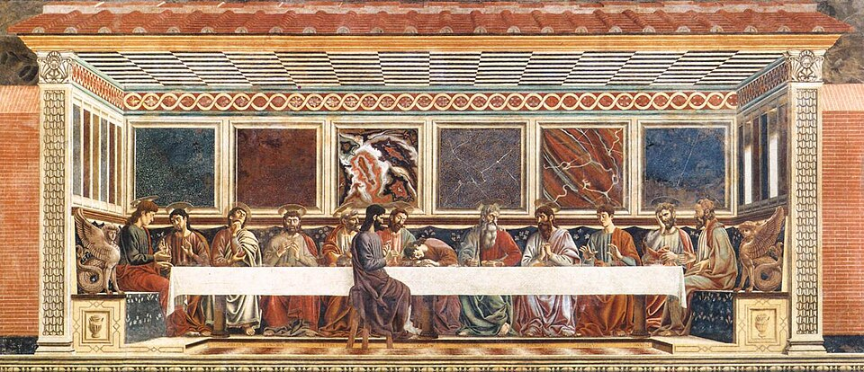
画像を拡大 ＋《最後の晩餐》
- 作者
- アンドレア・デル・カスターニョ
- 制作時期
- 1447年
- 所在地・所蔵
- 旧サンタポッローニア修道院食堂、フィレンツェ
- 素材・形式
- フレスコ画
出典・画像について

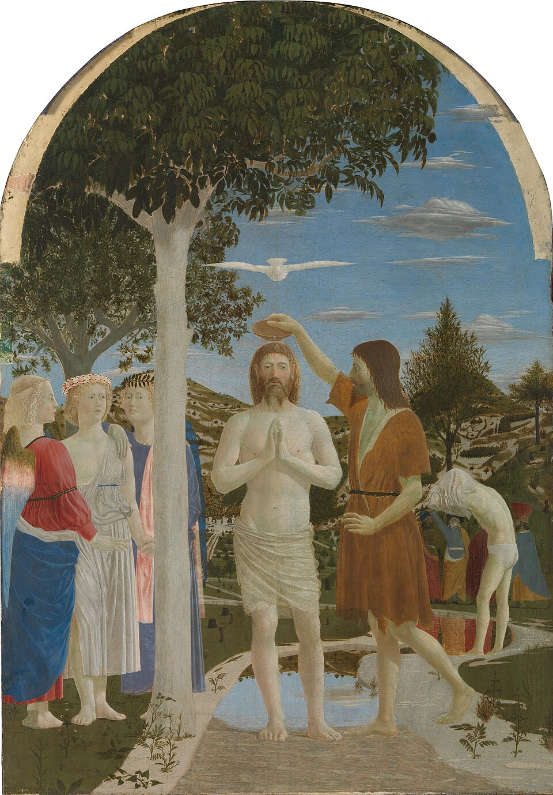
画像を拡大 ＋《キリストの洗礼》
- 作者
- ピエロ・デッラ・フランチェスカ
- 制作時期
- おそらく1437～1445年頃
- 所在地・所蔵
- ナショナル・ギャラリー、ロンドン
- 素材・形式
- テンペラ・板
出典・画像について
各地の宮廷とマンテーニャの空間表現
動画 17:49～15世紀後半には、こうした美術がイタリア各地へ広がりました。ピエロ・デッラ・フランチェスカが活動したウルビーノでは、フェデリーコ・ダ・モンテフェルトロが芸術家を支援しました。フィレンツェ以外の宮廷でも、芸術の保護が行われたのです。

《ウルビーノ公夫妻の肖像（フェデリーコ・ダ・モンテフェルトロとバッティスタ・スフォルツァ）》
- 作者
- ピエロ・デッラ・フランチェスカ
- 制作時期
- 1473～1475年頃
- 所在地・所蔵
- ウフィツィ美術館、フィレンツェ
- 素材・形式
- テンペラ・板
出典・画像について
作品情報：作品・画像・利用条件
マンテーニャと錯覚の空間
動画 18:04～アンドレア・マンテーニャは、パドヴァ近郊に生まれ、マントヴァのゴンザーガ家に招かれて宮廷画家として活躍しました。短縮法を用いた表現を得意とし、ドナテッロの影響を受けた、角張った硬い人体表現は、彫刻を思わせます。

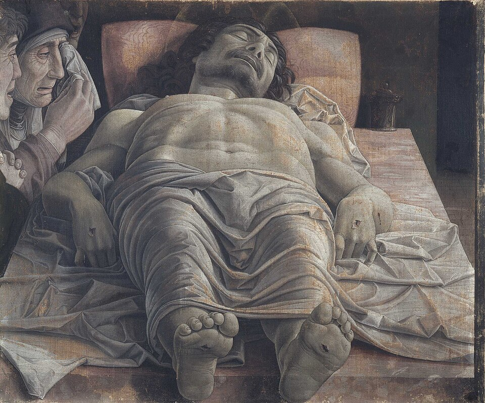
画像を拡大 ＋《死せるキリストと三人の哀悼者》
- 作者
- アンドレア・マンテーニャ
- 制作時期
- 1480年頃（制作年代に諸説）
- 所在地・所蔵
- ブレラ絵画館、ミラノ
- 素材・形式
- テンペラ・カンヴァス
出典・画像について
天井に描かれた絵が、実際に空へ開いているように見える表現も行いました。こうした錯覚を利用する表現はイリュージョニズムと呼ばれ、後のバロック美術における天井画を先取りしています。

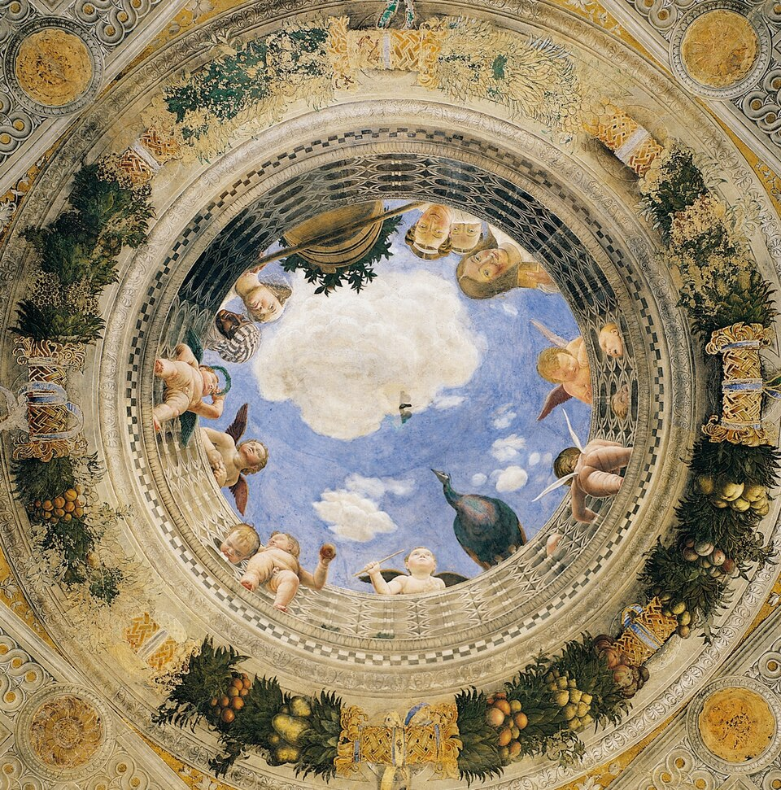
画像を拡大 ＋《結婚の間（夫婦の間）の天井画・オクルス》
- 作者
- アンドレア・マンテーニャ
- 制作時期
- 1473年頃（室内装飾1465～1474年）
- 所在地・所蔵
- ドゥカーレ宮殿サン・ジョルジョ城「結婚の間」、マントヴァ
- 素材・形式
- フレスコ画
出典・画像について
ボッティチェリと古代神話
動画 18:45～一方、フィレンツェも、「豪華王」と呼ばれたロレンツォ・デ・メディチのもとで栄え続けました。多くの芸術家が支援を受け、そのなかから、初期ルネサンスを代表する画家サンドロ・ボッティチェリが現れました。
《プリマヴェーラ（春）》や《ヴィーナスの誕生》には、古代神話の主題が描かれています。キリスト教を中心としてきた西洋で、古代文化の復興がこのような作品を生んだことは、中世の美術からの大きな変化です。また、壁に描くフレスコや板に描くテンペラが主流だったなか、《ヴィーナスの誕生》にはカンヴァスが使われています。大画面の迫力とともに、主題や素材における挑戦も注目されます。《春》の支持体は板であり、二作品の素材の違いは作品情報と注記で確認できます。

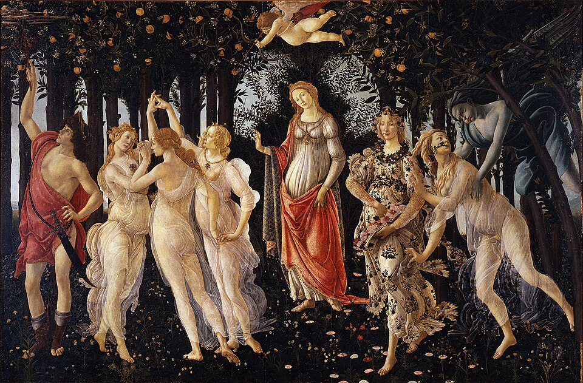
画像を拡大 ＋《プリマヴェーラ（春）》
- 作者
- サンドロ・ボッティチェリ
- 制作時期
- 1480年頃
- 所在地・所蔵
- ウフィツィ美術館、フィレンツェ
- 素材・形式
- テンペラ・板
出典・画像について

《ヴィーナスの誕生》
- 作者
- サンドロ・ボッティチェリ
- 制作時期
- 1485年頃
- 所在地・所蔵
- ウフィツィ美術館、フィレンツェ
- 素材・形式
- テンペラ・カンヴァス
出典・画像について
作品情報の補足：板とカンヴァス
《プリマヴェーラ》と《ヴィーナスの誕生》は、映像の説明ではともにカンヴァスに描いた作品とされますが、支持体は異なります。《プリマヴェーラ》はポプラ板、《ヴィーナスの誕生》はカンヴァスです。本文の古代神話についての説明と、外部確認した作品情報を区別しています。
確認資料：ウフィツィ《春》 · ウフィツィ《ヴィーナスの誕生》
工房と技術の継承
工房の技術とギルランダイオ
動画 19:49～ボッティチェリがリッピに学んだように、多くの芸術家は、工房で修業しました。工房はボッテーガと呼ばれ、師匠のもとで、専門的な技術を身につける場でした。師弟が共同で制作することもあり、技術の伝達が短い期間に進むことで、美術の様式も発展しました。
工房には、それぞれの得意分野がありました。アントニオ・デル・ポッライオーロの大きな工房では、激しい運動表現を特徴とする作品が作られました。ルカ・デッラ・ロッビアは、テラコッタに釉薬をかける技法を確立し、安価な彫刻を大量に生産して、工房を繁盛させました。

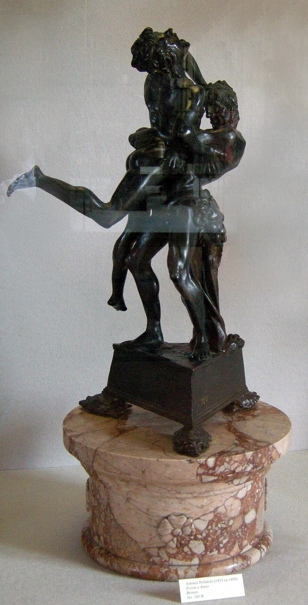
画像を拡大 ＋《ヘラクレスとアンタイオス》
- 作者
- アントニオ・デル・ポッライオーロ
- 制作時期
- 1470年代
- 所在地・所蔵
- バルジェッロ国立美術館、フィレンツェ
- 素材・形式
- 青銅
出典・画像について

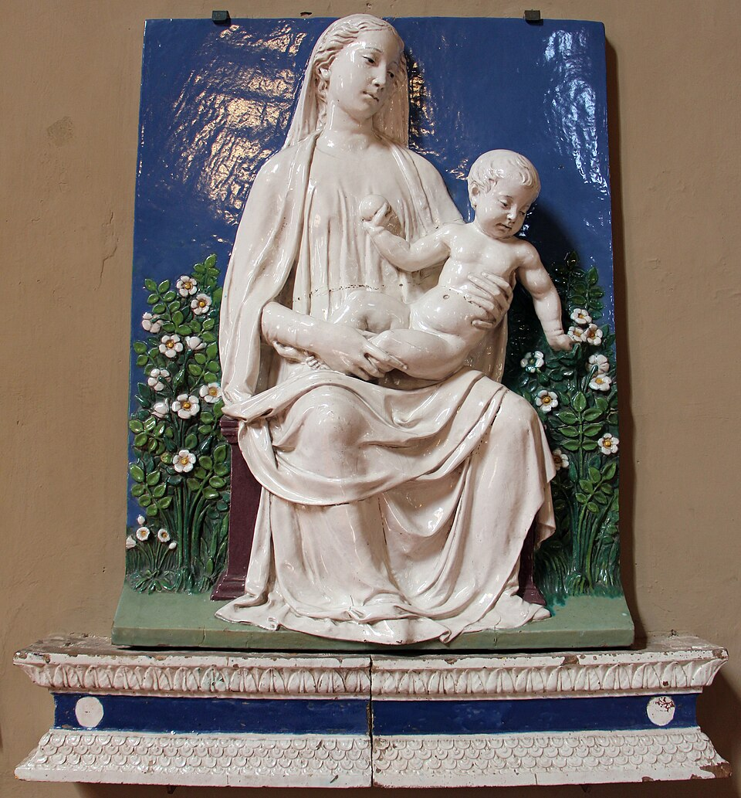
画像を拡大 ＋《薔薇園の聖母（聖母子）》
- 作者
- ルカ・デッラ・ロッビア
- 制作時期
- 1450～1460年頃
- 所在地・所蔵
- バルジェッロ国立美術館、フィレンツェ
- 素材・形式
- 施釉テラコッタ
出典・画像について
ギルランダイオと立体の描写
動画 20:35～ドメニコ・ギルランダイオは、金細工の仕事に携わったと伝えられる父のもとに生まれ、自身は絵画の道へ進みました。作品中の浮彫や彫刻の描写に、その特徴が表れています。また、ルネサンス最大の彫刻家ともいわれるミケランジェロの師として知られます。

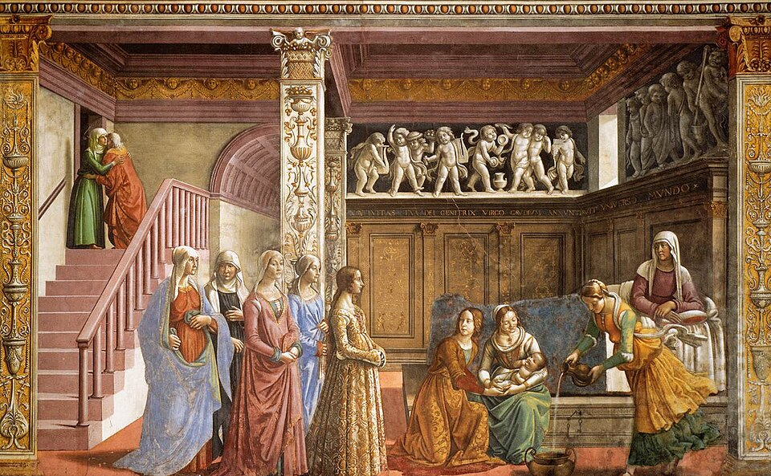
画像を拡大 ＋《聖母マリアの誕生》
- 作者
- ドメニコ・ギルランダイオと工房
- 制作時期
- 1486～1490年
- 所在地・所蔵
- サンタ・マリア・ノヴェッラ聖堂トルナブオーニ礼拝堂、フィレンツェ
- 素材・形式
- フレスコ画
出典・画像について
人物情報の補足：父の仕事
映像ではギルランダイオの父を彫刻家と説明しています。一方、ヴァザーリの伝記は金細工の仕事を記し、Gettyの人名典拠は「商人、おそらく金細工師」としています。本文では金細工との関係を留保付きで記し、絵画内の立体表現についての解説は保持しました。
確認資料：ヴァザーリ伝記（Fordham大学公開） · Getty ULAN
ヴェロッキオとレオナルド
動画 20:59～アンドレア・デル・ヴェロッキオは、大きな工房を経営し、レオナルド・ダ・ヴィンチの師となりました。彼の代表作《ダヴィデ》のモデルは、若い頃のレオナルドだったといわれます。ただし、これは確定した事実としてではなく、伝えられる話として捉える必要があります。

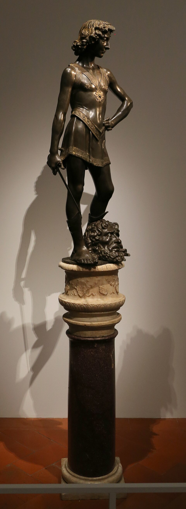
画像を拡大 ＋《ダヴィデ（ゴリアテの首を伴うダヴィデ）》
- 作者
- アンドレア・デル・ヴェロッキオ
- 制作時期
- 1460年代後半頃
- 所在地・所蔵
- バルジェッロ国立美術館、フィレンツェ
- 素材・形式
- 青銅
出典・画像について
作品情報：作品・画像・利用条件
ヴェロッキオは15世紀後半を代表する彫刻家ですが、レオナルドと共同で《キリストの洗礼》も制作しました。左側の天使はレオナルドが描いたとされます。弟子の圧倒的な才能を見て、師が筆を折ったという逸話もありますが、誇張を含む話と考えられます。実際には、もともとの専門である彫刻制作へ戻ったらしいとされています。
画像を拡大 ＋
《キリストの洗礼》
- 作者
- アンドレア・デル・ヴェロッキオ、レオナルド・ダ・ヴィンチ
- 制作時期
- 1470～1475年頃
- 所在地・所蔵
- ウフィツィ美術館、フィレンツェ
- 素材・形式
- テンペラ・油彩、板
出典・画像について
三大巨匠と盛期ルネサンスへの展開
動画 21:39～ヴェロッキオの弟子には、レオナルドのほかにペルジーノもいました。ペルジーノは、ラファエロ・サンティの師です。ギルランダイオからミケランジェロへ、ヴェロッキオからレオナルドへ、そしてペルジーノからラファエロへと、工房を通じた技術の継承が続きました。
ミケランジェロ、レオナルド、ラファエロの三人は、ルネサンスの三大巨匠と呼ばれます。しかし、彼らは天才であるというだけで、単独で芸術の極致に達したわけではありません。短い期間に受け継がれてきた技術が、その才能を開花させたのです。
初期から盛期ルネサンスへ
動画 22:11～1495年に制作が始まったレオナルド・ダ・ヴィンチの《最後の晩餐》を皮切りに、巨匠たちによる傑作が、30年にも満たない期間に生まれました。それより前の時代を初期ルネサンス、この短い最盛期を盛期ルネサンスと呼びます。
画像を拡大 ＋
《最後の晩餐》
- 作者
- レオナルド・ダ・ヴィンチ
- 制作時期
- 1495～1498年
- 所在地・所蔵
- サンタ・マリア・デッレ・グラツィエ修道院食堂、ミラノ
- 素材・形式
- 壁画（乾いた壁面への混合技法）
出典・画像について
要点まとめ
- ルネサンスはフランス語で「再生」「復興」を意味し、ヴァザーリの「リナシタ」が語源とされる。カロリング・ルネサンスなど以前の復興が帝国の栄光を目指したのに対し、イタリアでは人々が生きていくために古代を学んだ。
- 14世紀のイタリアでは十字軍の中継地として交易が栄え、フィレンツェ、シエナ、ヴェネツィアなどの自治都市コムーネが成立した。一人の君主がいないフィレンツェは、古代ギリシアや共和政ローマを参考に合議で政治を進め、ルネサンスが最初に起こった。
- フィレンツェの金融業は、1337年に始まった百年戦争での債務の踏み倒しと、14世紀半ばのペスト流行で危機に陥った。その絶望のなかで人間性を回復しようとする動きが強まった。
- ルネサンスは文学から始まった。ダンテの『神曲』、古代文献を翻訳して人文主義（ヒューマニズム）を生んだペトラルカ、ボッカッチョの『デカメロン』。美術ではジョットとニコラ・ピサーノがプロト・ルネサンスと呼ばれる。
- 15世紀にはメディチ家が台頭し、コジモ・デ・メディチと孫ロレンツォ・デ・メディチがパトロンとして芸術家を支えた。
- 建築のブルネレスキはサンタ・マリア・デル・フィオーレ大聖堂のドームを完成させ、透視図法（線遠近法）を考案した。絵画のマザッチョは《聖三位一体》《貢の銭》で遠近法を生かし、彫刻のドナテッロはコントラポストで写実的な人物を表した。この三人が初期ルネサンスの出発点として特に重要。
- ギベルティはサン・ジョヴァンニ洗礼堂の青銅扉の競技に勝利した。アルベルティは『絵画論』『彫刻論』『建築論』で理論を残し、ウッチェロは透視図法を熱心に研究した。
- 修道士画家フラ・アンジェリコは《受胎告知》を数多く描き、ゴシックからルネサンスへの変化を示した。ほかにフィリッポ・リッピ、カスターニョ、数学を生かしたピエロ・デッラ・フランチェスカ、マントヴァで短縮法やイリュージョニズムを用いたマンテーニャがいる。
- ロレンツォ・デ・メディチのもとでボッティチェリが《プリマヴェーラ（春）》《ヴィーナスの誕生》に古代神話を描いた。《ヴィーナスの誕生》にはカンヴァスが使われている。
- 芸術家は工房（ボッテーガ）で修業し、ギルランダイオからミケランジェロ、ヴェロッキオからレオナルド、ペルジーノからラファエロへ技術が受け継がれた。1495年に始まるレオナルドの《最後の晩餐》以降の短い最盛期を盛期ルネサンスと呼ぶ。
確認問題
答えを考えてから開いてください。選択問題は選ぶとすぐ正誤と解説が出ます（選択肢の順番は開くたびに変わります）。各問題のリンクから該当の章や作品カードへ戻れます。
選択問題：0／5問回答・正解0
A. 一問一答答えを考えてから開く
問1サンタ・マリア・デル・フィオーレ大聖堂の直径約42メートルのドームを完成させ、透視図法（線遠近法）を考案した建築家は誰か。
答えを見る
問21401年のサン・ジョヴァンニ洗礼堂の青銅扉の競技で勝利し、後にミケランジェロが「天国の門」と呼んだ扉へつながる仕事をした彫刻家は誰か。
答えを見る
問3ルネサンスの芸術家が師匠のもとで専門的な技術を身につけた工房を、イタリア語で何と呼ぶか。
答えを見る
B. 4択選ぶとすぐ正誤と解説
問4《貢の銭》でキリストの額に消失点を置き、見る人の視線をキリストへ導いた画家は誰か。
→ 本文で確認（マザッチョが描く空間）
問5工房を通じた師弟関係として正しい組合せはどれか。
→ 本文で確認（三大巨匠と盛期ルネサンスへの展開）
問6『絵画論』『彫刻論』『建築論』を著し、理論を文章として後世に伝えた人物は誰か。
→ 本文で確認（アルベルティの理論とウッチェロの遠近法）
C. 図版問題画像を見て答える
問7この作品の名前と作者を答えよ。
答えを見る
問8この作品の作者は誰か。
→ 作品カードで確認
問9天井が空へ開いているように見えるこの天井画の作者は誰か。
→ 作品カードで確認